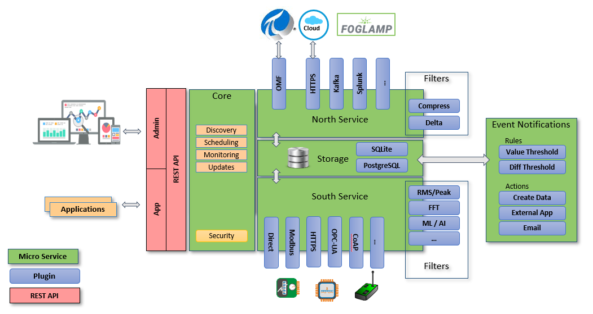

FogLAMP Architecture¶
The following diagram shows the architecture of FogLAMP:
- Components in blue are plugins. Plugins are light-weight modules that enable FogLAMP to be extended. There are a variety of types of plugins: south-facing, north-facing, storage engine, filters, event rules and event delivery mechanisms. Plugins can be written in python (for fast development) or C++ (for high performance).
- Components in green are microservices. They can co-exist in the same operating environment or they can be distributed across multiple environments.

FogLAMP Core¶
The Core microservice coordinates all of the FogLAMP operations. Only one Core service can be active at any time.
Core functionality includes:
Scheduler: Flexible scheduler to bring up processes.
Configuration Management: maintain configuration of all FogLAMP components. Enable software updates across all FogLAMP components.
Monitoring: monitor all FogLAMP components, and if a problem is discovered (such as an unresponsive microservice), attempt to self-heal.
REST API: expose external management and data APIs for functionality across all components.
Backup: FogLAMP system backup and restore functionality.
Audit Logging: maintain logs of system changes for auditing purposes.
Certificate Storage: maintain security certificates for different components, including south services, north services, and API security.
User Management: maintain authentication and permission info on FogLAMP administrators.
Asset Browsing: enable querying of stored asset data.
Storage Layer¶
The Storage microservice provides two principal functions: a) maintenance of FogLAMP configuration and run-time state, and b) storage/buffering of asset data. The type of storage engine is pluggable, so in installations with a small footprint, a plugin for SQLite may be chosen, or in installations with a high number of concurrent requests and larger footprint Postgresql may be suitable. In micro installations, for example on Edge devices, in-memory temporary storage may be the best option.
Southbound Microservices¶
Southbound microservices offer bi-directional communication of data and metadata between Edge devices, such as sensors, actuators or PLCs and FogLAMP. Smaller systems may have this service installed onboard Edge devices. Southbound components are typically deployed as always-running services, which continuously wait for new data. Alternatively, they can be deployed as single-shot tasks, which periodically spin up, collect data and spin down.
Northbound Microservices¶
Northbound microservices offer bi-directional communication of data and metadata between the FogLAMP platform and larger systems located locally or in the cloud. Larger systems may be private and public Cloud data services, proprietary solutions or FogLAMP instances with larger footprints. Northbound components are typically deployed as one-shot tasks, which periodically spin up and send data which has been batched, then spin down. However, they can also be deployed as continually-running services.
Filters¶
Filters are plugins which modify streams of data that flow through FogLAMP. They can be deployed at ingress (in a South service), or at egress (in a North service). Typically, ingress filters are used to transform or enrich data, and egress filters are used to reduce flow to northbound pipes and infrastructure, i.e. by compressing or reducing data that flows out. Multiple filters can be applied in “pipelines”, and once configured, pipelines can be applied to multiple south or north services.
A sample of existing Filters:
Expression: apply an arbitrary mathematical equation across one or more assets.
Python35: run user-specified python code across one or more assets.
Metadata: apply tags to data, to note the device/location it came from, or to attribute data to a manufactured part.
RMS/Peak: summarize vibration data by generating a Root Mean Squared (RMS) across n samples.
FFT: generate a Fast Fourier Transform (FFT) of vibration data to discover component waveforms.
Delta: Only send data that has changed by a specified amount.
Rate: buffer data but don’t send it, then if an error condition occurs, send the previous data.
Event Engine¶
The event engine maintains zero or more rule/action pairs. Each rule subscribes to desired asset data, and evaluates it. If the rule triggers, its associated action is executed.
Data Subscriptions: Rules can evaluate every data point for a specified asset, or they can evaluate the minimum, maximum or average of a specified window of data points.
Rules: the most basic rule evaluates if values are over/under a specified threshold. The Expression plugin will evaluate an arbitrary math equation across one or more assets. The Python35 plugin will execute user-specified python code to one or more assets.
Actions: A variety of delivery mechanisms exist to execute a python application, or create arbitrary data, or email/slack/hangout/communicate a message.
REST API¶
The FogLAMP API provides methods to administer FogLAMP, and to interact with the data inside it.
Graphical User Interface¶
A GUI enables administration of FogLAMP. All GUI capability is through the REST API, so FogLAMP can also be administered through scripts or other management tools. The GUI contains pages to:
Health: See if services are responsive. See data that’s flowed in and out of FogLAMP
Assets & Readings: analytics of data in FogLAMP
South: manage south services
North: manage north services
Notifications: manage event engine rules and delivery mechanisms
Certificate Store: manage certificates
Backup & Restore: backup/restore FogLAMP
Logs: see system, notification, audit logging information